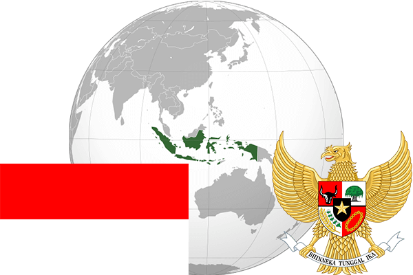

To`liq nomi: Indoneziya Respublikasi
Region: Janubiy-sharqiy Osiyo
Qonunchilik shakli: Respublika
Mustaqillik kuni: 17-avgust 1945 - yil (Gollandiyadan)
Poytaxt: Jakarta
Maydoni: 1 919 440 km² (dunyoda 14 -o`rinda )
Chegaradosh davlatlari: Malayziya, Singapur, Sahrqiy Timor, Papua-Yangi Gvineya
Aholisi: 257 563 000 (dunyoda 4 - o`rinda, 2015 -yil roʻyxat)
Aholi zichligi: 130,85 /km²
Aholining o`rtacha yoshi: 70,25 yil (72,8 ayollar, 67,7 erkaklar)
Rasmiy tili: Indoneziya tili
Dini: Islom, protestant, katolik, Induizm, buddizm va konfutsiylik
Pul birligi: Indonez rupisi
Telefon prefiksi: +62
Internet domen: .id
Xalqaro tashkilotlarga a`zoligi: BMT (1950 – yildan), Osiyo-Tinch okeani iqtisodiy hamkorlik tashkiloti
Dengiz va okeanlarga chiqishi: Tinch va Hind okeanlari
YIM: Butun: $ 2,839 trln, Jon boshiga $ 11 300 (2015 - yil roʻyxati)
Yirik shaharlari: Jakarta, Surabaya, Bandung, Bekasi, Medan, Tangerang, Depok, Semarang